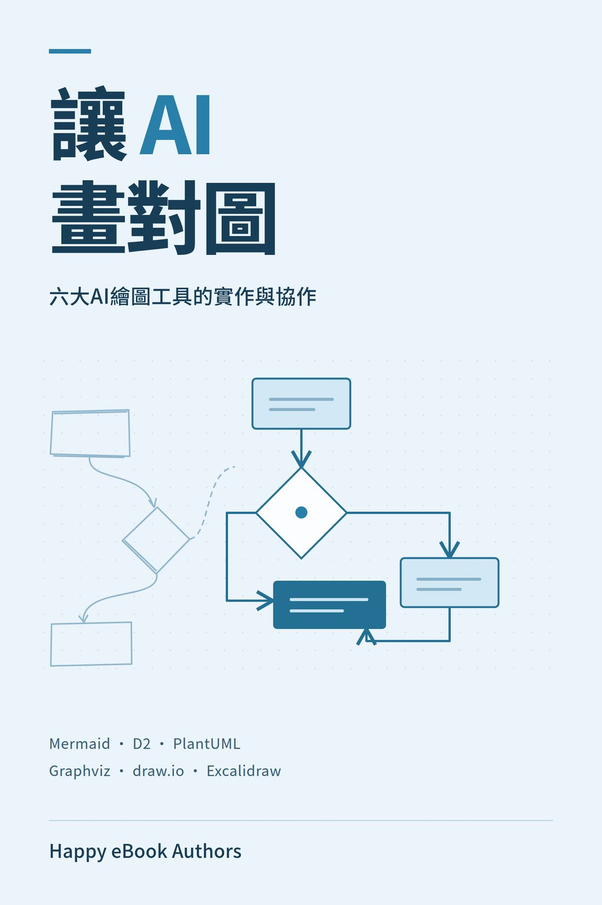

電子書
讓 AI 畫對圖
一張圖可以語法正確、配色整齊，卻仍然讓人做錯決定

讓 AI 畫對圖
一張圖可以語法正確、配色整齊，卻仍然讓人做錯決定
一張圖可以語法正確、配色整齊，卻仍然讓人做錯決定。箭頭方向反了、付款逾時被當成失敗、同名方塊代表不同概念——讓 AI 把圖畫得更漂亮，並不會讓這些錯誤自動消失。 《讓 AI 畫對圖》帶你從需求釐清出發，運用 AI 協助產生、修改與驗證流程圖、架構圖、互動圖及需求白板，交付可編輯、可維護、能由團隊接手的圖稿。 本書以虛構的線上訂單與客服平台貫穿實作，涵蓋建單、付款、結果未知、人工交接與部分退款，介紹六套工具的分工： • Mermaid：將流程圖直接寫進文件。 • D2：以文字維護系統架構。 • PlantUML：表達互動時序、狀態與模型關係。 • Graphviz：從依賴資料產圖，追蹤變更影響。 • draw.io：讓 AI 草稿能由人接手編輯。 • Excalidraw：用白板整理尚未確定的需求與問題。 除了工具語法，你還會練習撰寫明確的 AI 任務規格、限制局部修改範圍、辨識「能產圖卻畫錯」的問題，以及處理跨工具轉換、版本管理、自動化驗證與安全交付。各章搭配操作示範、練習及參考解答，最後以部分退款綜合專案串起完整協作流程。